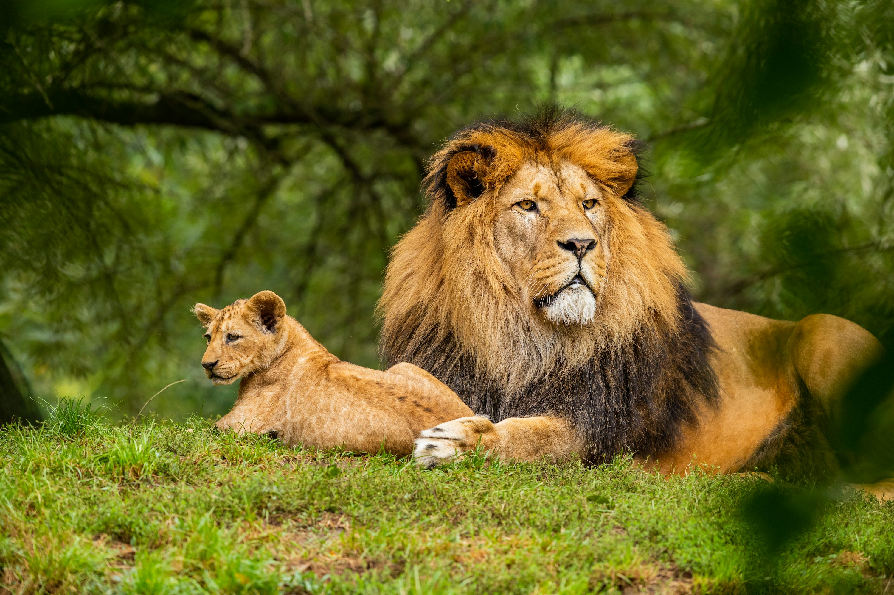
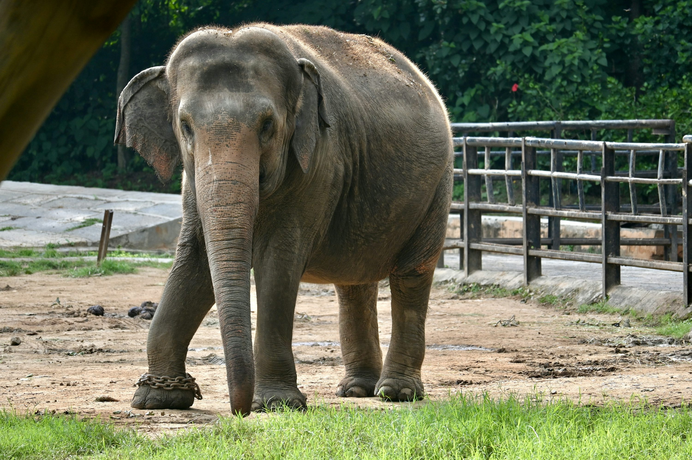
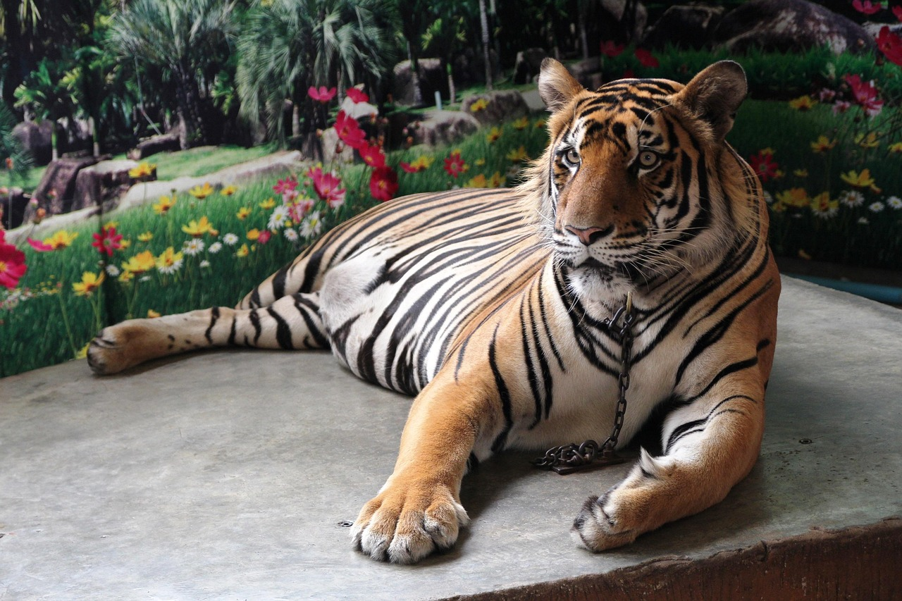
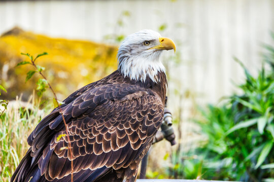
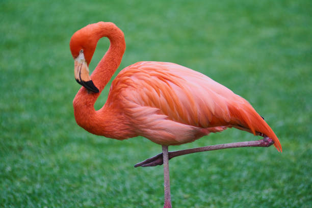
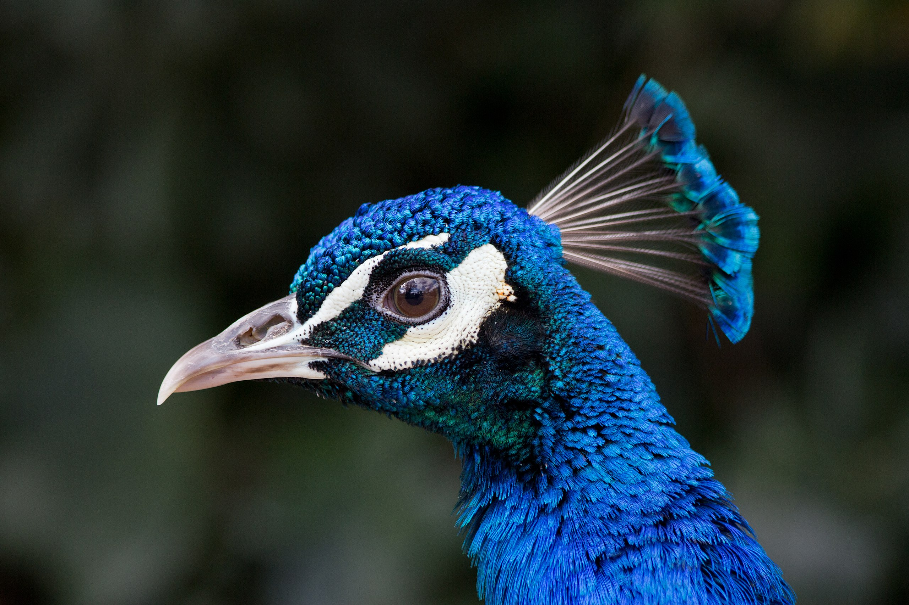
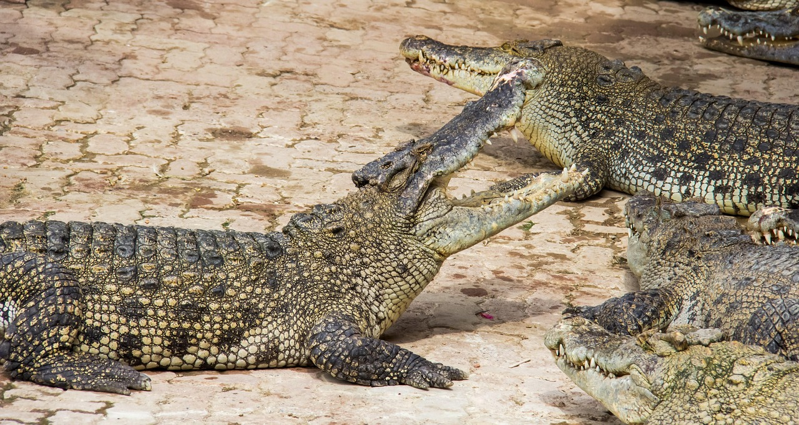
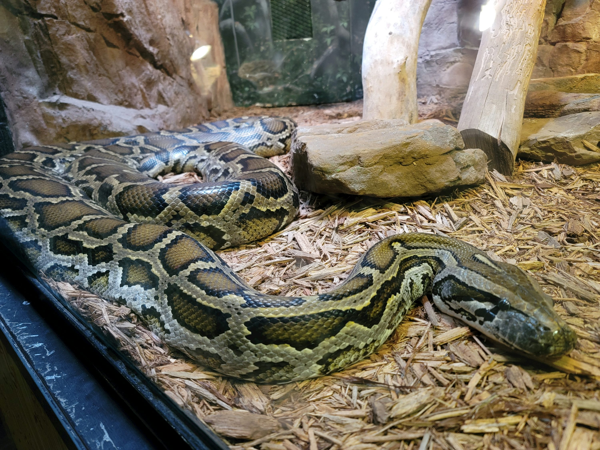
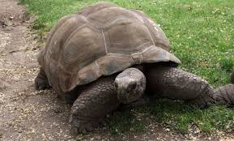

Zoo Haria

En nuestro zoo encontrarás una increíble variedad de animales, desde mamíferos hasta reptiles, cada uno con características fascinantes que los hacen únicos en su especie.








